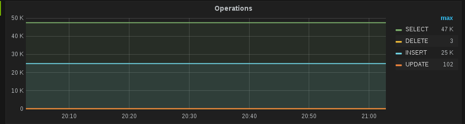
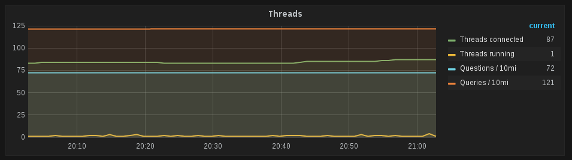
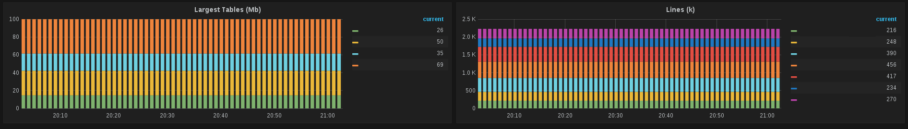
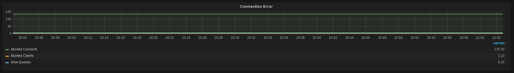

On the last post we started prometheus on a CoreOS with cloud-init scripts, lets automate a little more the project an initialize our CoreOS dockers with service discovery for all services and a complete metric gather from an external MySQL database.
So we already have an infrastructure, we just need two more containers, the first one is the MySQL metrics exporter, and the other is Grafana with Prometheus configured.
Prometheus have two pieces of software that we will use for metrics gathering, the first one is an AWS metrics exporter, the other one is the mysqld_exporter.
Start MySQL Prometheus metrics as Docker container:
docker run -d -p 9104:9104 -e DATA_SOURCE_NAME="monitoring:password@db-aws:3306)/database" prom/mysqld-exporterIf everything is ok, you can check with docker logs docker_id. Access your CoreOS host on port :9401/metrics, now we have some cool metrics like:
mysql_info_schema_table_rows{schema="database",table="table1"} 2030The seconds part is to configure the Prometheus container, first we discovery on the lamest way, mysqld_exporter IP:
core@coreos-512mb-nyc3-01 ~ $ docker network inspect bridge
[
{
"Name": "bridge",
"Id": "7c7ac7c9effb9a9c5e00713e1818fbfef610c55df723ace8c4b5327068cdd342",
"Scope": "local",
"Driver": "bridge",
"IPAM": {
"Driver": "default",
"Config": [
{
"Subnet": "172.17.0.0/16"
}
]
},
"Containers": {
"67f370833d21de46752248b1a7fa6e1e845c8ce5f696892062c9bda1803e7c34": {
"EndpointID": "26f64899d1e4dc88d5bf27e808a1effdf319e5ed59c6ebb8f41c7dc30e639cd7",
"MacAddress": "02:42:ac:11:00:02",
"IPv4Address": "172.17.0.2/16",
"IPv6Address": ""
},
"c32bd9ed8f1597635f30e6c59637813e1135030aef89651aea3cfd94b46dab12": {
"EndpointID": "e028b808080e34406acc963c0c93ca22cbda67daa4d5d5fc8c3902e62ed9bdcd",
"MacAddress": "02:42:ac:11:00:03",
"IPv4Address": "172.17.0.3/16",
"IPv6Address": ""
...Now we configure the prometheus.yml, and start the container
/home/core/prometheus.yml --
scrape_configs:
# The job name is added as a label `job=<job_name>` to any timeseries scraped from this config.
- job_name: 'mysqld_explorer'
# Override the global default and scrape targets from this job every 5 seconds.
scrape_interval: 60s
scrape_timeout: 10s
target_groups:
- targets: ['172.17.0.2:9104']
docker run -d -p 9090:9090 -v /home/core/prometheus.yml:/etc/prometheus/prometheus.yml prom/prometheusFinally run Grafana:
docker run -d --name=grafana -p 3000:3000 grafana/grafana
Basic status
==========
First lets see the commands executed ( SELECT, INSERT, UPDATE, DELETE ) in one graph

Metrics come from:
SHOW GLOBAL STATUS
mysql_global_status_commands_total{command~="select|update|insert|delete"}Other metric is the Threads running/Threads connected.

mysql_global_status_threads_connected
mysql_global_status_threads_running
mysql_global_status_questions
mysql_global_status_queriesBesides that you have Tables sizes vs. Table lines

mysql_info_schema_table_size{schema="database",component="data_length"}
mysql_info_schema_table_rows{schema="database"} To finish the basic dashboard lets configure some more 3 metrics:

mysql_global_status_aborted_connects
mysql_global_status_aborted_clients
mysql_global_status_slow_queriesI really recommend the read of High Perfomance MySQL, as well as the MySQL manual.
For this post is fair enough to show some very basic metrics, we can correlate other information like machine CPU, memory, Disk I/O.
We can create more dashboards with InnoDB storage details and Slave replication information.
On the next posts I'll show how to integrate the AlertManager and integrate it with Slack for chatops.